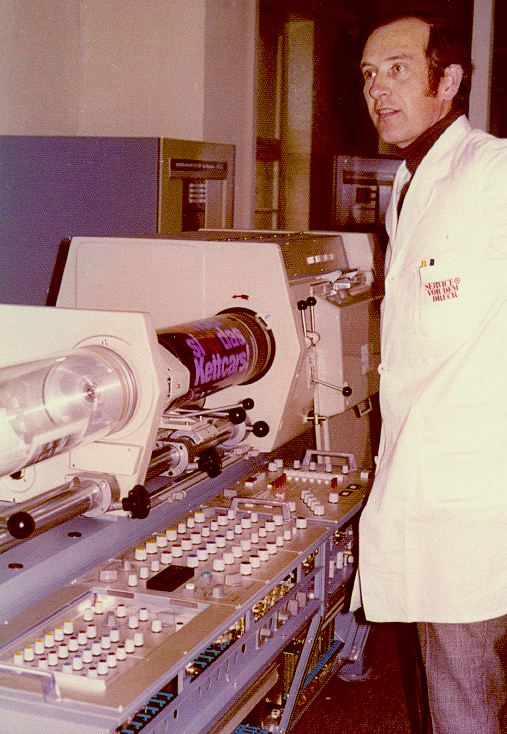

Hell Chromagraph DC 300 B Colour Scanner
A one-tonne drum scanner whose operator dials in colour corrections blind — no preview, no monitor, the result visible only on the printing press

Overview
The Chromagraph DC 300 B, introduced by Dr.-Ing. Rudolf Hell GmbH of Kiel in 1975, is a drum scanner that separates a colour original into the four printing plates an image needs — cyan, magenta, yellow, and black — while an operator programs its corrections through a bank of analog rotary knobs. It stands at the end of a long lineage: Hell's first drum scanner, the Colorgraph, appeared in 1958 with 500 vacuum tubes and an hour of warm-up; the first Chromagraph (the first scanner for colour-corrected halftone separations) followed in 1965; the DC 300 proper arrived in 1971; the DC 300 ER added electronic screening in 1973; and this DC 300 B followed in 1975. Hell's own product page calls the DC 300 B the precursor of the famous DC 350 (1981). The series was a large commercial success: the 200th DC 300 was completed in June 1974, and by 1985 Hell had built about 2,500 DC-Chromagraph units across the A, B, and 350 models.
An operator's experience of a DC 300 B is the opposite of a screen. The machine is over three metres long and weighs about one tonne, with a scanning drum and a recording drum fixed on a common axle and rotating together. A colour transparency is taped to the transparent scanning drum; unexposed film is mounted on the recording drum. A scanning head travels along the length of the rotating drum, and inside it a halogen lamp's light is split into red, green, and blue channels read by photomultipliers, with a fourth, larger-aperture channel supplying the "unsharp" surround signal used to sharpen the image. Those four signals feed an analog colour computer — the Farbrechner — which converts them into the four separation signals. The operator's whole job is to set the corrections on that analog computer by hand, without ever seeing the picture.
Deep dive
The single most striking fact about the DC 300 is that the operator corrects colour, gradation, and sharpening with no visual feedback of the result. The Hell-Verein, describing analog scanners, is explicit: "The operator could not see the image while adjusting the color corrections… the image was not yet scanned or saved. So the operator needed a lot of experience to adjust color corrections because the result was only visible when the image was printed." Corrections were entered by feel and by professional memory — a red apple's cyan, a shadow's density — and were confirmed only weeks later in the printing proof, long after the film was exposed. In a museum of interfaces this is an exceptional case: a high-stakes, irreversible control loop deliberately closed by human expertise rather than by any display.
The correction instrument is an analog computer, not a digital one. The Hell-Verein describes the Farbrechner as having "many rotary knobs" — viele Drehknöpfe — with which the operator sets the colour corrections for the image, and German Wikipedia adds that the four-channel colour computer was "specifically programmable" for the desired colour and tonal corrections. Screen angle was separately selectable for each colour, with nominal settings of 0° (yellow), 45° (black), −18.4° (cyan) and +18.4° (magenta), all freely adjustable to avoid moiré. There is no menu and no screen — the operator's model of the image is held entirely in the hands and the eyes, translated into voltage offsets on the colour computer.
The DC 300 combined in one pass what had previously been several manual steps: colour separation, colour correction, scaling, and halftoning. A scale computer (Maßstabsrechner) digitised and buffered the separation signals for one drum revolution and read them back at a different clock rate on the next, changing image size circumferentially; in the feed direction, different scanning-head and recording-head speeds gave enlargement or reduction. Memory held only two revolutions, not a whole image. A screen/raster computer then converted tone values into halftone dot sizes and drove a laser exposure head, exposing the film on the recording drum at the correct dot size, shape, screen ruling, and angle. Depending on size and film, all four separations could be exposed together, two at a time, or one at a time.
This was capital equipment for repro houses, printing companies, and newspapers — not desktop hardware. Marketed specifications included enlargement/reduction from 33% to 1685%, a maximum output format of 40 × 50 cm, and selectable screen rulings of 34–80 lines/cm. The series was among the most successful and best-known professional scanners of its time, with roughly 2,500 units across the Chromagraph family by 1985. No verifiable list price could be confirmed — contemporary drum scanners were priced for commercial prepress, but a specific DC 300 figure was not sourced.
The DC 300 displaced the older colour-camera and contact-screen methods of making separations, and was itself displaced by digital systems. Its chief rivals were Crosfield Electronics (UK), whose Magnascan drum scanner appeared in 1969, and Scitex (Israel), whose Response page-assembly system pushed prepress toward the digital workstation in the late 1970s and 1980s. Within Hell, the DC 350 (1981) succeeded the DC 300, followed by colour-composition systems such as the ChromaCom and Combiskop. From the late 1990s, cheaper flatbed scanners and digital cameras ended the drum-scanner era. Today the DC 300 B is preserved and framed as a cultural monument by the Hell-Verein in Kiel, the friends' association of the Dr.-Ing. Rudolf Hell technical collection, which had 24 Hell devices entered onto the Schleswig-Holstein list of movable cultural monuments in 2019.
Team & pioneers
- Dr.-Ing. Rudolf Hell. German engineer and inventor (1901–2002), founder of Dr.-Ing. Rudolf Hell GmbH in Kiel. Began with the Hellschreiber (1925) before building electronic engraving, photo-typesetting, and colour-scanning systems.
- Dr.-Ing. Rudolf Hell GmbH. Kiel manufacturer of the Chromagraph DC 300 series; taken over by Siemens in 1981 and merged with Linotype in 1990 to form Linotype-Hell AG.
- Hell-Verein / Technische Sammlung Dr.-Ing. Rudolf Hell. Kiel friends' association preserving Hell's technical collection and documenting the DC 300 B and analog scanner operation.
Media
Sources
- German Wikipedia — Chromagraph DC 300 (technology, variants DC 300 1971 / DC 300 ER 1973 / DC 350 1981, sales, screen angles, specs)
- Hell-Verein / hell-kiel.de — Chromagraph DC 300 B (1975) product page
- Hell-Verein / hell-kiel.de — Funktionsweise der Analogscanner (workflow, "blind" colour correction, Farbrechner with viele Drehknöpfe)
- Hell company chronology 1974–1984 (200th DC 300 completed 18 June 1974)
- Hell company chronology 1985–2002 (1,000th DC 350 and ~2,500 total DC-Chromagraphen by 1985)
- Wikipedia — Rudolf Hell (founder history; Siemens 1981, Linotype-Hell 1990)